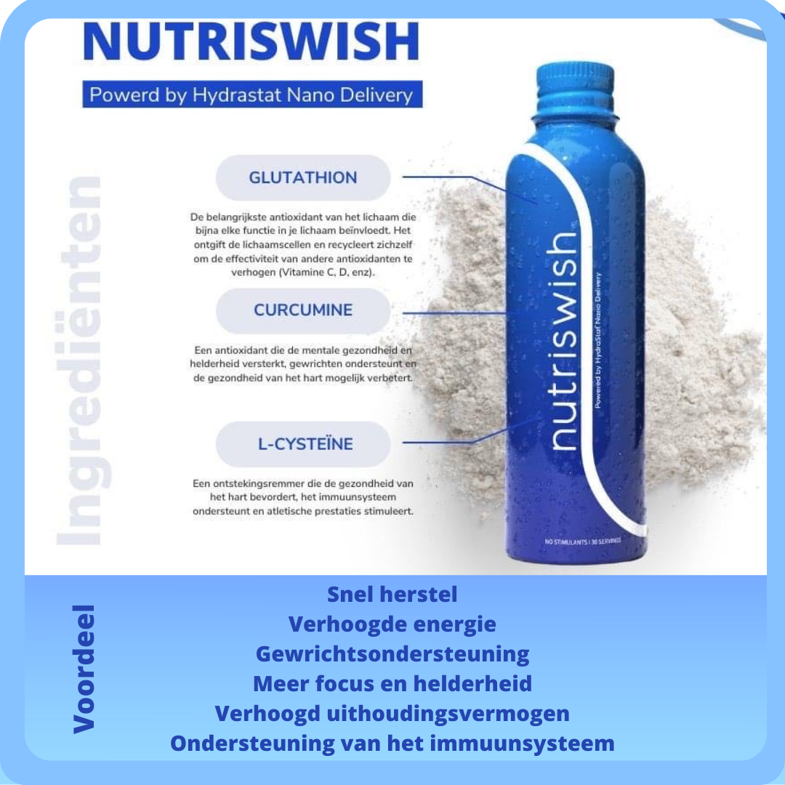
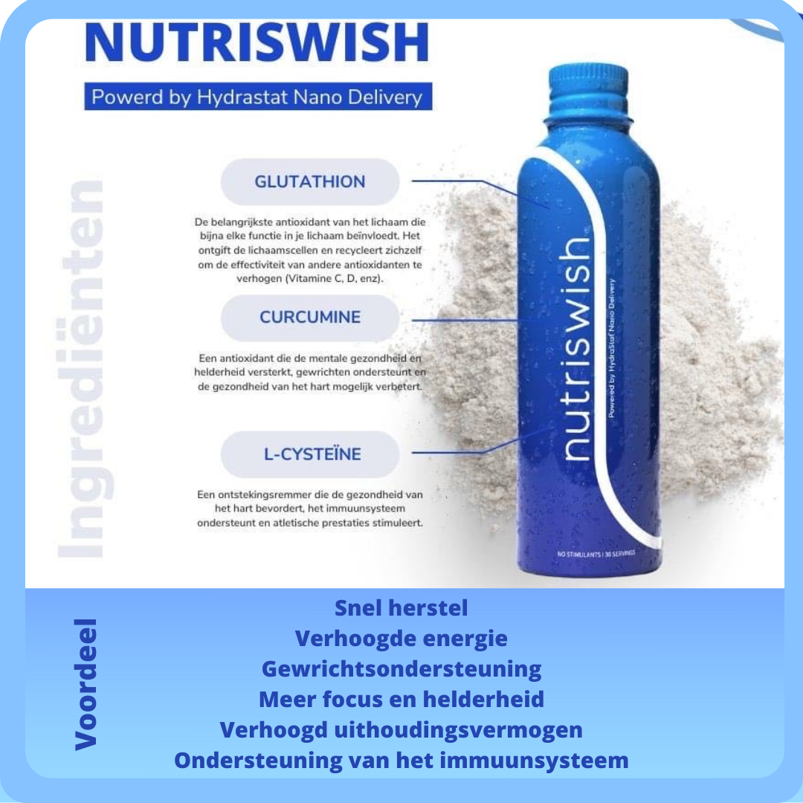

Neumi Swish & Neumi Skin
Neumi maakt gebruik van baanbrekende nanotechnologie om de absorptie van belangrijke ingrediënten die een grote rol spelen in uw gezondheid te maximaliseren. Enkele van deze ingrediënten zijn Glutathion, Curcumine, L-Cysteïne, en nog veel meer. Nanotechnologie is de weg van de toekomst als het gaat om gezondheid, en wij zijn de pioniers.
Neumi levert de nieuwste technologie tegen een eerlijke prijs, zodat IEDEREEN dit kan ervaren. Ze creëerden Gods's Miracle Molecule!
Wanneer je Neumi gebruikt, worden miljarden nano-deeltjes geabsorbeerd, waardoor je direct toegang hebt tot het biologisch beschikbare GLUTATHION en je gezondheid zal verbeteren.
 

Je kan deze Neumi Swish en Neumi Skin vinden in mijn praktijkwinkeltje of online op https://neumi.com/veerleflorenty/home
Neumi kwam begin september 2022.
De laatste 2 jaren was ik in rouw en dat liet zich liet zien in mijn verouderend gezicht en mijn kapotte haren!
Ik voelde dat ik dit moest proberen, gewoon 2x swish & 2x sprayen ! Gewoon doen…
Na 1 week Neumi zag ik opnieuw Glow op mijn gezicht, er was iets anders!
Na 1 maand Neumi voelde ik me zo vitaal, dat overdrive me opnieuw deed zakken.
Geduld! Want mijn spirit voelde het wel…maar mijn lichaam had meer tijd nodig!
Na 4 maanden Neumi
Voel ik me vrijer vanbinnen, ik kan weer neuriën
Gevoel meer aan te kunnen, meerdere taken per dag combineren
Betere focus en helderder denken
Mijn haren worden weer dikker, nieuwe haren zijn zichtbaar
Mijn huid in gezicht en nek voelt dikker en wordt weer strakker
Lijntjes in gezicht, nek en borst verzachten
Donkere kringen rond mijn ogen worden weer lichter
Pigmentvlekken op mijn armen worden lichter
Ik ben benieuwd naar meer!
Het kan enige tijd duren voordat je lichaam resultaten toont aan de buitenkant,
maar bedenk eens hoe lang je lichaam glutathion heeft gemist !
Op celniveau gebeurt er heel wat, doordat er opnieuw opbouw is.
Probeer het, je lichaam zal je zo dankbaar zijn!
Er is een niet goed – geld terug garantie, maar na enkele dagen is er gegarandeerd resultaat!
Let’s turn young again!


Bekijk deze en andere echte fotogetuigenissen op https://www.facebook.com/groups/New Me NL/BE (Neumi)